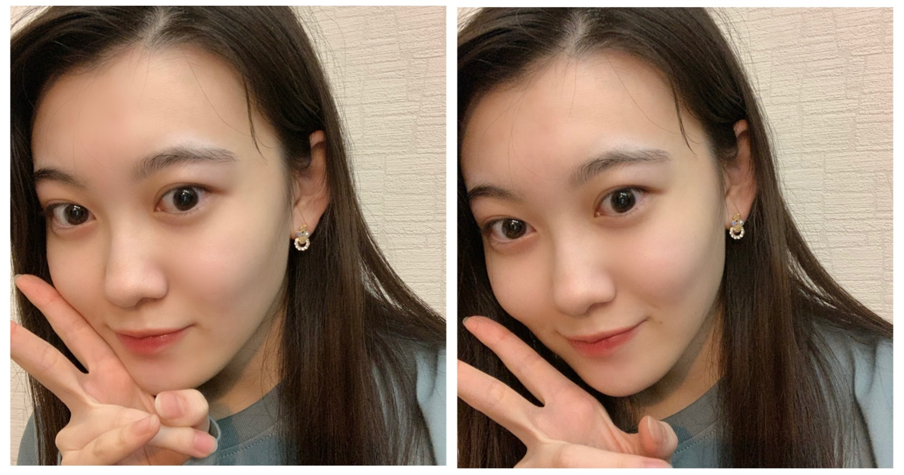

2020/1027Tue明るくね 松尾美佑
今、甘栗を食べています。
今日も良い日です。
最近気づいた事は、早起きは幸せを増やしてくれることです。
そして2度寝は幸せそのものです。
どっちを選びましょうかね
(๑ت๑)
松尾美佑です¨̮
16歳、高校2年生です。
一昨日前髪切りました
♪♪
明るい気持ちᐠ( ᐛ )ᐟ
お話を始めますね
24日に発売されました！
B.L.T.さん！

オフショットですっ
制服を着させて頂きました！
学校の中で追いかけっこをして下さったり、私の緊張を笑顔で解いてくださって、
本当に有難く楽しかったです！
そして綺麗な川にも行きました！
凄く遠い山も見えて、緑と青が沢山で
本当に綺麗でしたˊᵕˋ
インタビューでは今までとは少し違う、難しいようで凄く大切なお話もさせて頂きました
色々と深く考えがちな自分の事も少しだけ好きになれるような気がしました。
見て頂けたら嬉しいです( Ꙭ)
10月25日
中田花奈さん、ご卒業おめでとうございます
研修生の頃から中田さんは私の憧れで、
繰り返し繰り返し画面の中にいる中田さんを必死で追いかけていました。
『生のアイドルが好き』で初めてご一緒させて頂けると分かったとき本当に嬉しくて、
伝えたい事が沢山あって、
でも緊張で言葉が気持ちと反比例して下手っぴになってしまいましたが
本当に優しく楽しくお話して下さって、宝物のような時間でした。
中田さんの言葉は、私を私のままでいさせてくれるような、そんな力があります。
自分の "好き" を分かっているのに無視しようとしてしまったり、諦めようとしてしまったり、
本来の自分から悲しいのに離れそうになった時に引き止めてくれるような力です。
沢山ありがとうございます。
ずっとこれからも憧れです。

念願だった木のフォークを手に入れました。
(スプーンもいます)
お返事〜
✽ 子供の頃好きだったアニメは何ですか？
テレタビーズは、アニメに入りますか？
✽ 栗拾い、したことありますか？
あるらしいんですけど記憶に無いです(´◔_◔)
✽ オススメのドラマあったら教えて欲しいなぁ☺️
それなぁ☺️
教えて欲しい。
✽ どうしたら綺麗に前髪が流せますかね...？本当に疑問でなりません৲( °৺° )৴??
なんだその顔文字さんは！可愛い！
私は流したい方向で小さい手がいっぱいあるクリップ(バンスクリップって言うらしい)で前髪を止めちゃって、しばらくしてからとるとちょっと髪の毛が集合してくれてるので、コテでもうちょっとしっかり集合してもらいます！
クリップで癖をつけちゃうと簡単です！
✽ 海外に行ったことありますか？
1回だけ！
今凄く飛行機乗りたい気分です。
✽ 至福のひとときはどんな時？
夜お布団に入って何も考えないで天井とにらめっこする時間
✽ コメントって全部見てますか？？こんなに遅いコメントも見れてるのかな？？
見てますよ！
( ఠఠ̲ఠ )( ఠఠ̲ఠ )目が3つ！
↑↑もうちょっと笑って欲しいですね
( ఠ͜ఠ )あなたいい笑顔よ
✽ 冬になったら何鍋を食べたい？？
キムチ！
✽ ミュウちゃんは流星に何を願いましたか？
流れ星見れますように

まだ前髪切る前です

切った後(今)
明日は〜
なお〜〜〜〜〜
かぼちゃ貰ったの
大きくして馬車にしたから乗ってってね
そして、
明日は白石麻衣さんの卒業コンサートです
私達新4期生にとっては初めて先輩方とご一緒させて頂くライブです。
緊張が止まりませんが、白石さんと同じステージに立てる最初で最後の有難い時間を精一杯噛み締めながら挑みます。
最後までありがとうございました¨̮
ミュウでした¨̮
ばいっっっっっっっ( Ꙭ )/''
コメント(199)
みゆ！
ひろき(Yandji)です☺️
さっきの続き書くわ！
夜布団に入ってボーッとするの最高だよね☺️
最近不眠症気味になってて夜寝れないんやなぁ
2時間経つと必ず目が覚めるw
でも、睡眠は大事やからなるべく寝るように心がけないといかんなぁ、、、
コメント全部読んでくれてるのは嬉しい
おれ、文章書くの苦手やから読みづらいやろうなぁ、、、
上手く文章書けるように頑張ろっと☺️
キムチ鍋美味しいよね！！！
個人的には赤からなべが好き☺️
赤から鍋の〆でご飯とチーズのリゾット系にするのが最高に美味しい☺️
デコ出しも可愛いなぁ☺️
よし、コメント質問に関するコメントここまでっと！
今、電車でコメント書いてるんやけど眠くて寝そうw
まだまだ家まであるから、頑張って起きてないとな！
今回もブログ更新ありがとう！
次の更新楽しみに待ってるわ☺️
では、またねー
ひろき(Yandji)より
まいやんの卒コンお疲れさまでした！
ミュウちゃんの美佑スマイルしっかり目に焼き付けましたよ～！
とても素敵な卒コンになりましたね。
最初から最後までずっと感動してました。
時に笑いもあって、あ～やっぱ乃木坂だな！って感じました。
僕にとってすごく大切な思い出になりましたよ～。
本当にありがとう。
こんな素敵なグループで活動できるミュウちゃんが正直羨ましいです。笑
これからのミュウちゃんの活躍を期待してますよ～。
まずは、ゆっくり休んで下さい。
それじゃ、またねー。
今回のコメント、ライブの感想とかも書くから少し長くなるかもしれないです…
まずはブログ更新ありがとう！仕事なかなか落ち着かなくてコメント書く時間もないままライブを迎えたので今になっちゃってゴメンね。
花奈ちゃんの卒業…美佑ちゃんは生ドルで初めて共演したんだね！花奈ちゃんと言えおいでシャンプーのイメージが強いけど個人的にはインフルエンサーで見せる表現力が1番印象的かな〜。インフルエンサーだけじゃないけど曲調に合った表情だったりパフォーマンスが目を惹かれました。乃木坂46の活動以外にもバラエティだったりラジオだったり様々な場所で活躍してたね！卒業したあとも活躍してる姿を見れる事を自分も願ってます！
そして、今日のまいやんの卒コンお疲れ様でした。
4期生はまいやんと夜明けを踊ってたね！まいやん＋○期生だけってパフォーマンスが新鮮だったけど活動期間が1番短かった4期生にとって今回まいやんと一緒にパフォーマンス出来たことが宝物になったらいいなぁって思いました。あと、夜明けでまいやんに頭ポンポンされてたよね？(笑)いいなぁって思いながらも最後の舞台でまいやんとの絡みを見れて自分も凄く嬉しかったです！
最後のお見送りは時間の都合で高校生メンバー出られなかったのがこちらとしても凄く残念だったけど今回のライブを通して最高の形でまいやんのこと送り出せたんじゃないかなと思います！
最後のまいやんはより一層輝いてて美しかったけど、しっかり4期生のパフォーマンスも画面に写る美佑ちゃんも輝いてたと思います！
ではでは今回はこの辺で、ゆっくり休んで疲れをとってね！また質問も含めてコメントさせてもらいます！
こんばんはコメント少し遅くなりました。
乃木坂には素敵な先輩が沢山居ますね
その先輩を前にすると緊張して伝えたい事が
上手く伝えられない事もあるよね
でも大丈夫先輩達も同じ道を通って来ているから
ミュウちゃんの気持ちは汲み取ってくれてると
思いますよ。
将来後輩が入って来た時は優しく
接してあげて欲しいね。
blt購入して読みましたよ。
人は生きて行く過程でその時は
気が付かなくても、後からあの時の
かけがえの無い時間と気付く
だから意識して日々を過ごそう
とか言ってもおそらく永遠の課題だろうね
ちょっと話が逸れたけど、どの画像も
今のミュウちゃんらしく素敵なフォトばかりで
嬉しくなります。
またのグラビアに期待します。
そして今日は大先輩のまいやん事白石麻衣が
乃木坂を卒業しましたね、正に乃木坂の象徴
配信Liveと無観客だけど、配信ライブならではの
企画でした、この話はミュウちゃんからの
コメントを待ってまた書き込みします。
何はともあれ日々頑張って行こうね！
昨夜はお疲れ様でした。
これからも応援してます。
頑張れ！ ミュウ
もう最初から最後まで最高に最高に感動しまくりでした❗️
これからもまいやんちゃんと乃木坂ちゃんがずっとずっと大好きです
語彙力皆無でごめん
あと明日ののぎおびは久しぶりの美佑ちゃんが担当だね！
嬉しいな〜
明日も30分たくさん楽しもうね
またこんな時間にコメントで。
４期生は「夜明け」だったね。
２期３期４期がそれぞれ初めてセンターに選ばれた曲を披露するって形だったね。
そこで、全メンバーがまいやんと歌う時に、みゆちゃんはまいやんの前にかがんでて、頭をポンポンってされて、目があって微笑まれてたよね。ほんの一瞬の出来事だけど、みゆちゃんにとって宝物になったんじゃないかな。
見ててもすごく嬉しかったよ〜。
思っていたよりは新４期生の出番が多くてうれしかった！
衣装もすごく似合ってたし、手も白くて長いからダンスが綺麗に映えるよね。
きっと、達成感がすごかったんじゃないかな。
最後、全メンバーがハグをしてたのに、高校生メンバーは時間の都合で参加できなかったのが本当に残念だなぁ。
幸い、今日中なら見逃し配信が見られるから、できるだけみゆちゃんを見てまたコメントするね〜。
それじゃ、今日はライブおつかれさま。
また明日ね、おやすみゆ〜。
今日は朝コメです。
まいやんの卒コン、お疲れ様！
凄く凄く凄く、まいやん愛と乃木坂愛に溢れた、めっちゃいいライブだったよ！
自分は生で乃木坂46のライブ見るのが初めてだったのですが、開演までの30分を待つ間、視聴者カウンターが１秒毎に100人ずつ増えて、それが30分間ずっと止まらなくて、気付いたら20万人を超えてて、これからとんでもないことが始まることをライブ前から感じて、ワクワクが止まりませんでした。
予感どおり？とんでもないアクセス数のため、25分遅れでのライブスタート、やっぱりすごいです！
まっつんといくちゃんの影ナレも、まいやん愛に溢れてて、最高でしたね！
ライブでは主役のまいやんはもちろんですが、ずっとミュウちゃんを探していましたよ！
最初のＭＣの時に真夏さんのすぐ後ろにいたミュウちゃん、4期生の「夜明け」ではまいやんから頭ぽんぽんしてもらったミュウちゃん、「サヨナラの意味」ではまいやんとかっきーとのスリーショットのミュウちゃんなど、いろんなミュウちゃんを見つけましたよ！
それと、アンコール前のメンバー全員での影ナレで、ミュウちゃんは「白石さんはセンターという場所に立ちました」をやってたよね！？
一瞬だったけど、ミュウちゃんの声に反応しました！
これまで9年間、乃木坂46を支えてくれた白石先輩を送り出すライブに、ミュウちゃん達も参加できて良かったですね！
この経験を大事にして、これからの乃木坂46を盛り上げてくださいね！
応援してますよ！！
最後に、
ミュウちゃんが渡したかぼちゃの馬車に乗って、奈於ちゃんがくろみんとところに行きましたね！
ミュウちゃんの馬車、大活躍ですね！
それではまたコメントするね。
ミュウちゃんにとって今日がいい日になりますように！(^.^)/~~~
オッハーーー！
白石さんの卒コンライブ、見たよー
めちゃくちゃ感動したよー
まだ胸がドキドキ…するよー
ミュウちゃん、お疲れ様！
たくさんミュウちゃん見つけたよ！
テンション上げて頑張るぞーー！！
前髪師匠ぱっつん松尾美佑さまだいすこ壁|ω-o)ﾟ+. ﾎﾟｯ ♡
流れ星!最近見ました!めっちゃ光が強くて感動ぽっぽぽー壁]ω･U ﾆｬ♡
甘栗すち‼毎日早寝早起きしております。ドラマは10番組位観ています。オヌヌメはタリオ、どんぶり委員長、アレックスライダーです。
ノギザカスキッツ#20&ノギスキマチソワカン#20視聴いたしました。キャラデミー賞トップ20&さらば賞‼興味深い結果で面白かったです。20位‼スマイルガールズさんが入っておめいじんぐ壁|▽//)ゝﾃﾚﾃﾚ
乃木坂工事中‼視聴いたしました。縦笛チャレンジチューリップ♡プロポリスS&お名前かぶちゃやーよ♡クエン酸改B&どっちかマヨっちゃう&名場面はふーんまいやん特集よきよきピーナッツヾ(=ﾟ･ﾟ=)ﾉﾆｬﾝ♡
制服を着た松尾美佑さまきゃわわうれぴーぽーo(￣◎￣)o ﾊﾞﾌﾞｩ♡
座右の銘は一日一善(:3っ)っ -=三[布団]
秋の新アニメ～トニカクカワイイ♡ナイス[岩蔭|](ｴ)￣)
ほんじつも親子丼パワー100万馬力でばいころまる( ;-(ｴ)-)ゞｸﾏ
ミュウちゃん
まいやんの卒コン
おむかれっすヽ(･∀･)ﾉ
初めて聴いたまいやんの歌は
2011/11/30
いきものがかりの
『エール』だったなぁ
懐かしいなぁ
では
ミュウちゃんお疲れさまι(｀･-･´)/
24日に発売されましたB.L.T.さん！ミュウちゃんのブログを見て存在を知ったので残念ながらまだ届いてません！おはようございます。
オフショットだけでも素敵なのが伝わりますね。
川も山も、緑も青も、ミュウちゃん！って感じですね！
インタビューも楽しみに届くのを待つとします( ´꒳` )
ライブお疲れさまでした！
全編通して涙が止まらず終始泣いていたのでライブが終わった頃には喉がからからでした。笑
新4期生の出番は少なかったもののその少ない中でもミュウちゃんもしっかりと輝きを放ってましたよ！
4期生と白石さんで披露した夜明けまで強がらなくてもいい、とてもとても素晴らしく最高でした！
最後のお別れハグ、時間の関係で出れなかったけどちゃんとお別れしてもらえたのかな？
色々感想とかもあると思うで、ブログ更新の日を楽しみにしてます。
それでは、また(~ ˙-˙ )~
Today’s Recommend
君と羊と青 / RADWIMPS
卒業ライブの美佑ちゃん、スカーレットの衣装も相まってめちゃくちゃ迫力がありました。これからが本当に楽しみです。
未来はいつだって新たな希望ですもの。
4期が出てきたときも美佑ちゃんしか見てませんでした！
いつか会いたいです！
質問します！！
美佑ちゃんは乃木坂工事中の中で
面白い、またはやってみたい企画が有れば教えてください！
よろしくお願いします！
20歳のりょーがより。
おつかれさまです、コメント遅れました、、。
ブログいつもありがとうございます。
前から思ってたけど5日おきに更新って結構なペースだよねw
BLT買ったよ〜
現役だし制服はやっぱ似合うよね
あと一年半くらいかな、大事に過ごしてね！
あと、昨日は卒コン見てました〜
最初のMCとかも真夏の後だったからかなり見切れたよw
夜明けでは一時めっちゃセンター来たね！
最後は時間の関係で出れなくて残念、、、
美佑ちゃんは良い思いでになりましたか？
あとライブ通してお話しした先輩とかいたら教えてほしいな〜
今日はのぎおびみたいだね
見てるから頑張ってね〜
そんじゃまた5日後！
仕事中だけど休み取って見るよ〜。
昨日のライブの感想とか、練習やリハーサル中のエピソードとか、まいやんとのエピソードとかあったら聞きたいな！
みゆちゃん話すの上手いから大丈夫だよ、楽しもうね！
それじゃ、６時半にね〜！
みゆスマイル！
前髪似合ってる^^*
可愛さに磨きがかかりましたね
ノギザカスキッツ第1弾お疲れ様でした！
美佑ちゃんの演技力凄かったから第2弾も楽しみだな〜〜
今日ののぎおびもみにいくね！
まいやんと一緒に披露した夜明けでは、まいやんに頭を撫でられて、思わずまいやんの方を見上げてしまった美佑ちゃん、顔ははっきり見えなかったけど、嬉しそうだったね～Ｏ(≧∇≦)Ｏ～。
どのメンバーに対しても、まいやんは愛情を持って接してるのが伝わってきて、配信ライヴも悪くないなって思ったよ！
美佑ちゃん、
とっても素敵なライヴをありがとう～ヘ(≧▽≦ヘ)♪～
のぎおび⊿視たよー。
ずっとミュウちゃんがニコニコしていて、まいやんの卒コンの嬉しかったことや楽しかったことを話している姿を見た時は本当にミュウちゃんにとって素敵な思い出になったんだろうなぁって思った！
本当に良かったね！
イヤリングもすごく似合っていたよ～！
あっという間に終わっちゃったけどすごく楽しかったー！
ありがとう！
それじゃ、またねー。
まずは、まいやんの卒コンお疲れ様でした。
「夜明け」でまいやんの前に座ったときは心配したけど、松尾ちゃんの頭ポンってして笑ってくれたね。
やっぱりまいやんすごいと感動した瞬間でした。
その後の松尾ちゃんの涙美しかったよ。
そして、今日のSHOWROOM配信してくれてありがとう！！
1日お仕事で結果が良くなくて、気分が沈んでいました。
でも！松尾ちゃんの配信があると知って電車の中でガッツポーズしました！！
そして、昨日の卒コンへの募りに募った色んな気持ちをたくさん語ってくれてありがとう。
30分じゃ短かったでしょ？いつか個人で配信していっぱい話してる姿見たいな。
それでは、また〜。
ゆっくりとおやすみなさいませ〜〜。
コメント開始直後、謝罪になってしまうんですが…今日ののぎおびリアルタイムで見られませんでした。大変申し訳ありませんでした。。
今日お出かけしてたんですけど、ケータイが通信制限来てたのでなるべくSNSとか開かないようにしてたんですよ。そしたら一緒に出かけてた友達が"今日ののぎおび松尾美佑ちゃんだよ"って、教えてくれた時にはもう終わってました。(笑)でもね、さっき美佑ちゃんの今日の配信見てきたの！
まいやんの卒コンの話、当たり前だけど楽しそうに話してて本当に心に残ったんだなぁって一緒にパフォーマンス出来て嬉しかったんだなぁって伝わってきて安心した反面、昨日のライブを思い出して切なく泣きそうになってました。本当はしあわせの保護色も全員でパフォーマンスする予定だったんだね…それは悔しかったよね。時間のことだししょうがないことだとは分かってるけど4期生好きな自分にとってもやっぱり4期生含め全員でのパフォーマンスを見たかったです。でも退場途中に見えた保護色のパフォーマンスが1番印象的だったってことは見てる側にも伝わる幸せに溢れたなパフォーマンスだったんだなって思います！
話変わって、美佑ちゃん沖縄行ったことないんだね！だいちゃりは高校の修学旅行で1回だけ行ったことあります。それでも1回だけです(笑)
凄く楽しかったんだけど、海がとても綺麗だったってのと、凄く暑かったってくらいしか思い出せないです(笑)だからもう1回くらいは行って色んなところ観光したいなぁって！少し質問します↓
･美佑ちゃんは蛇とか大丈夫ですか？
･甘栗食べてる美佑ちゃんですがケーキで1番好きなのはモンブランですか？
そういえば今日買い物行ったって最初に書いたんですけど、以前コメントで書いたニット帽とスキニーを今日は買ってこれました。前に見たやつとは違うやつだけど(笑)あとは靴も買いました！今日ののぎおびで付けてたカボチャの髪飾り、似合っていて可愛かったです、素敵な配信をありがとうございました！またコメントしますね？
今日も30分ずっと楽しかったね
みゆたんの綺麗なお顔と可愛い声と優しい話し方にたくさん癒されましたね
次回も今から楽しみにしてますね
今日は遅コメです。
のぎおび見たよ！
今日、ミュウちゃんが出るとは思いもせず、昼休みにＨＰ見てビックリ、危うく見逃すところでしたが、何とか見ることができて、めでたしめでたしです。
こうやって気づくことができたのも運命？かも！
のぎおび出演も今回で3回目ですね！
今回はハロウィン前ということで、カボチャの仮装、とても可愛くて、何枚もスクショしてしまいました。
昨日の卒コンの話しでは、白石さんと同じステージに立てた喜びが溢れてて、見てるこっちも幸せな気分になれましたよ！
オーバーチャーで既に泣いてたミュウちゃん、「夜明け」では白石さんの頭ぽんぽんからの笑顔に昇天してしまったミュウちゃん、「ガルル」の白石さんの煽りで心臓が目からでちゃったミュウちゃんなど、いろんな思いや感想を話してくれてありがとう！
白石さんへの思いと卒コンの感動が収まらず、「もう少し喋らせてください」とお願いまでして、話が止まらないミュウちゃんを見てて、こっちも昨日の感動が蘇ってきて、目頭が熱くなりました。
こんな素晴らしいステージ、ライブを体験できて良かったですね！
今回感じた思いを大切にして、これからの活動に活かしてくださいね！
ホント、お疲れ様でした！！
それではまたコメントするね。
ミュウちゃんにとって明日がいい日になりますように！(^.^)/~~~
美佑た〜ん♪
オッハーーー！
昨日ののぎおび、見たよー
ミュウスマイルありがとぅー
気持ちいっぱい伝わったよー
今日は一週間のラストデー！
テンション上げて頑張るぞーー！！
まいやんのラストライブとのぎおび観ました‼️
のぎおびはまいやんへの熱い想いが出ててスキッツの話が出来なかったね笑
木のフォークは温もりを感じれて良いですね。
早速使ってみましたか❓
白石さんの卒業ライブお疲れ様でした。
のぎおびshowroom、僕は見たよ。めっちゃ楽しかったです。
ミュウちゃん、めっちゃ綺麗で、めっちゃかわいかったです。
みゆスマイル、とてもすてきで、サイコーでした。
白石さんの卒業ライブ、僕はチケットを購入してなかったので、見れませんでした。ライブの話が聞けて、僕はめっちゃうれしかったです。
のぎおび選手権は、ドンマイでした。
ミュウちゃん、体調に気をつけてね。
またコメントするね。
いいね！。みゆスマイル！。
コメント遅くなってしまったんだけど、昨日ののぎおびお疲れ様でした！
まいやんの卒コンのお話、振り返りながらも笑顔でお話してて、当たり前だけどすっごい素敵なライブだったんだなぁって改めて思いました。
やっぱり夜明けの時、頭ポンポンされてたよね？(笑)あの時の美佑ちゃん宇宙一幸せそうな顔してました！なんなら話してる美佑ちゃんの顔も幸せそうでした(笑)最後のステージでそういう体験出来て本当に良かったね！
お話変わりますが、昨日は友達と買い物に行ってたんですよ、以前コメントでお話したかと思うのですが、前買ってないニット帽とスキニー、それと靴を買いまして、パンケーキ食べたりして久々にこういう休日らしい休日を過ごしたなぁと。
･美佑ちゃんは蛇とか爬虫類は大丈夫ですか？
･パンケーキは好きですか？
･沖縄行くならどこに行ってみたいですか？
質問させてもらいました(笑)最後になっちゃったけどのぎおびで付けてたカボチャの髪飾り、似合っていて凄く可愛かったです！またコメントしますね？
さっきコメントしたんですけど、昨日の夜に書いたコメントとめちゃめちゃ被っちゃってるので本当にスルーしてもらって大丈夫です(笑)
美佑ちゃんの貴重なお時間と目を疲れさせちゃうので(笑)
本当にごめんね〜
卒コンの感想をたくさん話してくれて、乃木坂愛が溢れていて、もう、何時間でも聞きたかったなぁ。それに可愛くて笑顔も素敵でサイコーだった。
みゆちゃんの声も癒しだしね。
その後、ライブの動画を何回も見たよ〜。
12時ギリギリまで。
「夜明け」でのみゆちゃんとまいやんのやり取り、軽く10回は見たよ〜。きっとまいやんが「全員と目を合わそう」って思ってくれてたんだよね。
みゆちゃんの肩に手を置いて、みゆちゃんが振り返って上を見て、目が合って微笑んで、頭をポンポンされるっていう、わずか数秒だけど、忘れられない最高の時間だったね。
のぎおびでもみゆちゃんが嬉しそうに話してて、僕も幸せだったなぁ。
まいやんのメモリアルマガジンのメンバーへのメッセージの中に新４期生はなくて残念だな、と思ってたけどしっかり新４期生のことも愛してくれてるのが嬉しかった。
まいやんはいなくなっても乃木坂は全然大丈夫。輝けるメンバーがいっぱいいるからね。
ライブでもみゆちゃんがパフォーマンスしてるところ全部見つけたよ。本当にダンス輝いてたしね。
そろそろ、ずと見たかった映画見られるかな？
それじゃ、またコメントするね〜。
おやすみゆ〜！
オッハーーー！
今日はお休みだよー
朝からめちゃいい天気だよー
今日はまったりの予定！
ミュウちゃんはどうかな？
テンション上げて頑張るぞーー！！
Happy Halloween!
お菓子をねだれないから、選んだケーキはモンブラン
みゆちゃんは、ここでも苺のタルトに惹かれますか♫
みゆスマイル、うさこあらさん、ジャック・オ・ランタンさん、こんにちは§
選択に悩む幸せな気づきからのスタート、ブログ更新ありがとうございます
ノギザカスキッツ、新シーズンが発表されて嬉しいエンディングでした
ひとを笑わせるのは難しいですが、笑顔と可愛いをたくさん魅せてください
SHOWROOM のぎおび◢、お疲れさま
移動時間帯に重なり、音声だけは聴くことができました
弾んだお声の調子から、こころから楽しまれた余韻が伝わり頭に広がった
お教えくださったシーンに沿って、アーカイブ配信を繰り返し観ました
私が1番印象に残ったところは「夜明けまで・・」のミュウがカッコいい❣
手に馴染みそうな木製フォークでは、何を召し上がりますか
サラダ・パスタ、デザートも美味しくいただけそうですね
B.L.T.さん12月号、期待のページを開いているヨ
インタビューは、乃木坂に入る前の話を特に興味深く拝読しました
グラビアは、学校と放課後の美佑さんを・・そうなのかと息を呑みながら
晴れ女さんオフショット、公式コメント動画、併せて鑑賞できてます
読後アンケートに、blt graphさんへの登場リクエストを書き添えました
巻頭や表紙、付録、購入特典、様々な機会にあらたな発見を期待したく♪
✽誕生月が11月のファンへ、祝福メッセージをお願いできますか？
掛橋沙耶香さん˙ᴥ˙と誕生日がおなじ、妻も11月生まれです
それでは
ばいっっっっっっっ( Ꙭ )/''の左手から、髪切りポースとわかった✌
おうちハロウィン楽しんでね、遠くても愛してるーッ♡
ミュウちゃんお疲れさまι(｀･-･´)/
今日は満月らしいですよ、しかもブルームーンでマイクロムーンだとか...ややこしいですけど要するに小さい満月だそうです、おはようございます。
昨日の...一昨日ののぎおびお疲れさまでした！
のぎおび自体少しお久しぶりだったけど、3回目くらい？もう慣れてきてるのか全然緊張してる感じなくて、楽しそうにお話してるから自分も楽しく観てましたよ( ´꒳` )
なんかテンション高いような気がしてたけど気のせいかな？ハロウィンのオバケのせいかな？笑
ライブの話が中心だったけど、ミュウちゃんがライブを楽しんでる話とか聞けたし、そのライブの話をしてるミュウちゃんがまた楽しそうに話すから観てる自分も楽しかったですꉂ(ˊᗜˋ*)
ただ一つだけ言いたいことがあるけど..."目から心臓が飛び出る"ってどういうことですか？笑
"口から心臓飛び出る"は聞いたことあるんですけどね...地域の差ですか？住んでる場所で飛び出る場所が違うんですかね〜？笑
(そんなことないですね笑)
それでは、また(~ ˙-˙ )~
Today’s Recommend
Happy Halloween (feat.柊優花 & 鎖那) / Junky
みゆた〜ん♪
今日はハロウィンだったね。
みゆちゃんは何かしたのかな？
僕みたいなおじさんは当然、何も特になく…仕事してたよ。
もう11月だしだいぶ寒くなってきたね〜。
半袖じゃなかなか厳しくなってきたね。
涼しいのが好きだけど、さすがにそろそろ家でも長袖かなぁ。
明日から11月だからまた何か目標立てて頑張ろうかな。
それじゃあ、おやすみなさい！
さっきハロウィンパーティーから家に帰ってきたんだけど、ポストに小包が入ってて…何と…
『乃木坂どこへ』のW購入特典キャンペーンに当選してたー！
めっちゃ嬉しい！
早く観たいけど、ちょっと予定があるからまた改めてゆっくり観るね！
質問させて下さい。
ミュウちゃんはハロウィンでお菓子はもらえましたか？
それじゃ、またねー。
最近、仕事の帰りにコンビニによって
スイートポテトを買うのが日課になっています。
個人的にはセブンイレブンのスイートポテトが一番美味しいです。
是非、食べてみてください！
早起きいいですよね
1日が長く感じれていいですよね
朝の空気が美味しいのでいつも起きたらとりあえず
ベランダに出て外の空気を吸っています！
最近、少し悩みがありまして
何時に寝ても必ず5時ごろに目が覚めてしまうんです。
もう少し寝てたいのに目が覚めてしまうんです。
変な癖がついてしまいました。
解決策ありますかね？
木の食器いいですね
木って温かい気持ちになりますよね。
僕も木が好きなので
ログハウスに住みたいと密かに思ってます。
今日から11月ですね！
11月も楽しい1ヶ月になりますように！！！！！
たつやでした٩( ᐛ )و
質問
・冬に向けて服は買いました？
・好きなおでんの具は？
・最近、お菓子作りはしましたか？
・鬼滅の刃は見ましたか？
・11月といえば何が思い浮かびますか？
僕はポッキーが思い浮かびます。
今月もよろしくお願いします！
オッハーーー！
今日もいい天気になりそだよー
もう11月だね、早い！
紅葉の季節、到来！
何処行こうかな〜
ミュウちゃんは紅葉見に行く予定ある？
あっ！ 今日はブログの日だね！
楽しみだな〜
卒コンの話しも聞きたいな〜
テンション上げて頑張るぞーー！！
今日から11月だね。
しかも美佑ちゃんのブログの日！
なんか、初日にブログってうれしいね。
それじゃまたね〜！
ミュウちゃんお疲れさまι(｀･-･´)/
昨日はハロウィンでしたけど、ミュウちゃんはやってみたい仮装とかありますか？ミュウちゃんなら何着ても似合いそうな気がしますね、おはようございます。
テレタビーズが懐かしすぎて小さい頃を思い出しました笑
あのテレビ子供にはちょっとトラウマじゃないですか？昔ちょっと観たことあるけど怖かった思い出があります。笑
というか放送当時って産まれてないですよね？何で知ったんですか？もしかして...年齢偽ってますか？笑笑
オススメのドラマは海外ドラマしかオススメ出来ないんですよねぇ笑
最近のドラマはあんまり観てないんですけど、SUITS/スーツは面白かったです！
あとは「マジシャンズ」っていう海外ドラマはオススメ出来るくらい面白いです！
大人版ハリーポッターって言われてるファンタジーなドラマなんですけど、ただ1つ少しだけ表現が激しいのでそこだけ耐性ないとキツいですけど、めっちゃ面白いのでオススメです( ᐛ )و
それでは、また(~ ˙-˙ )~
Today’s Recommend
流星 / 藍井エイル
最近結構寒くなってきたからいよいよ秋とか冬って感じがするね〜
でもその分温かくて美味しい鍋料理もたくさん食べれるね
早速僕は昨夜はすき焼きで今夜はしゃぶしゃぶを食べる予定です
ミュウ今日もキュートよ！
コメントする

PROFILE
新4期生リレー
202104
| SUN | MON | TUE | WED | THU | FRI | SAT |
|---|---|---|---|---|---|---|
| 1 | 2 | 3 | ||||
| 4 | 5 | 6 | 7 | 8 | 9 | 10 |
| 11 | 12 | 13 | 14 | 15 | 16 | 17 |
| 18 | 19 | 20 | 21 | 22 | 23 | 24 |
| 25 | 26 | 27 | 28 | 29 | 30 | |

みゆ！
ひろき(Yandji)です☺️
まいやんの卒コンおわったね！
久しぶりのライブはやっぱり良かった☺️
けど、やっぱり、卒業は寂しいなぁ、、、
遅くなったけど、ブログ内容についてコメント書くわ！
今回たくさん、質問返事してくれてたからそれについて書くね！
子供の頃好きなアニメありすぎて悩むなぁ、、、
けど、ジャンプとかサンデー、マガジンをよく読んでた！
特に、ワンピース、ナルト、名探偵コナンはずっと読み続けたなぁ☺️
ワンピースやコナンは今も見てるし集めてる☺️
前髪セットするの難しいよなぁ、、、
それに、おれは、結構癖毛も凄いから、セットするの大変なんよなぁ、、、
冬場はアイロンしてセットすると長く持つんやけど、夏はすぐ崩れるから苦手や！
海外めっちゃいってみたい！
おれは、イタリア、ドイツとかいってみたい☺️
長くなりすぎてるから一旦ここまでにするわ！
では、またねー
ひろき(Yandji)より